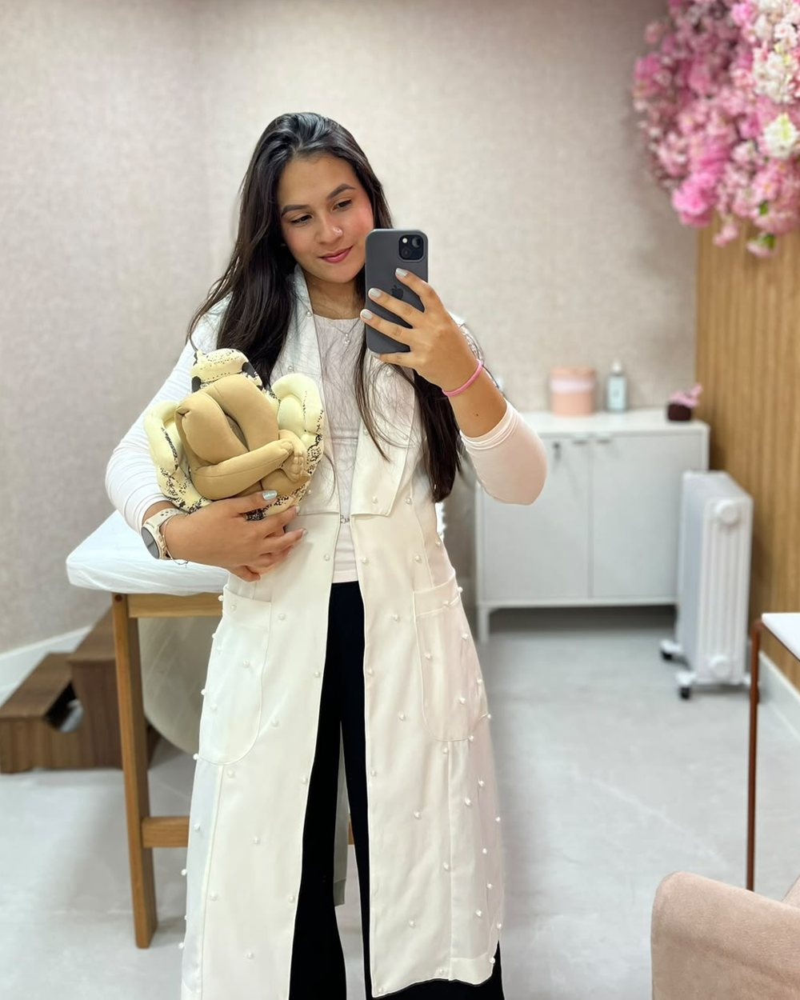
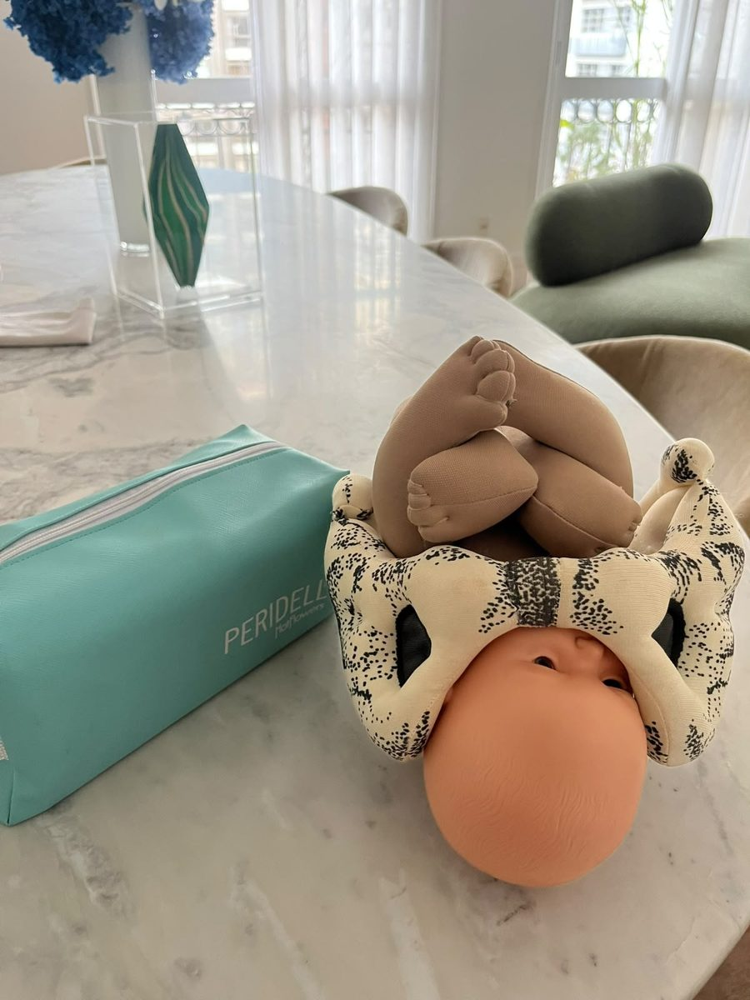
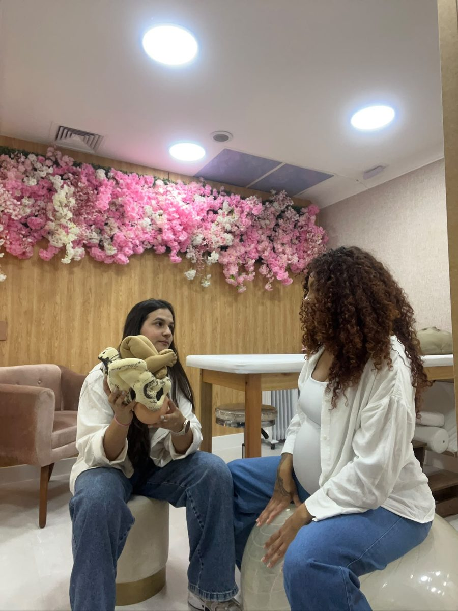
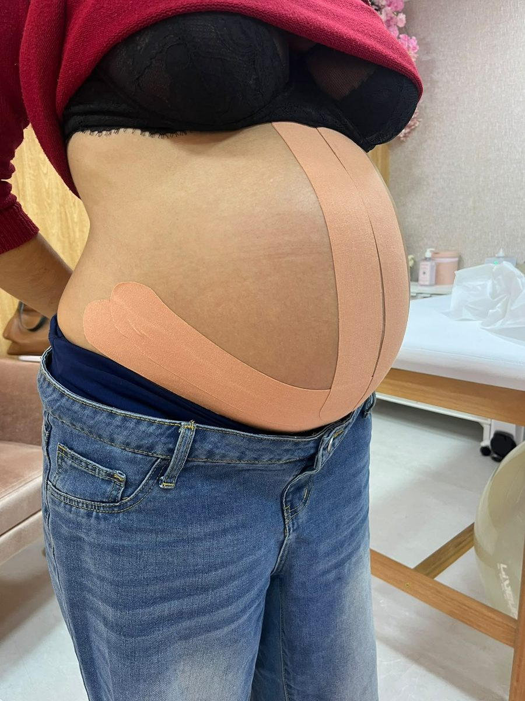
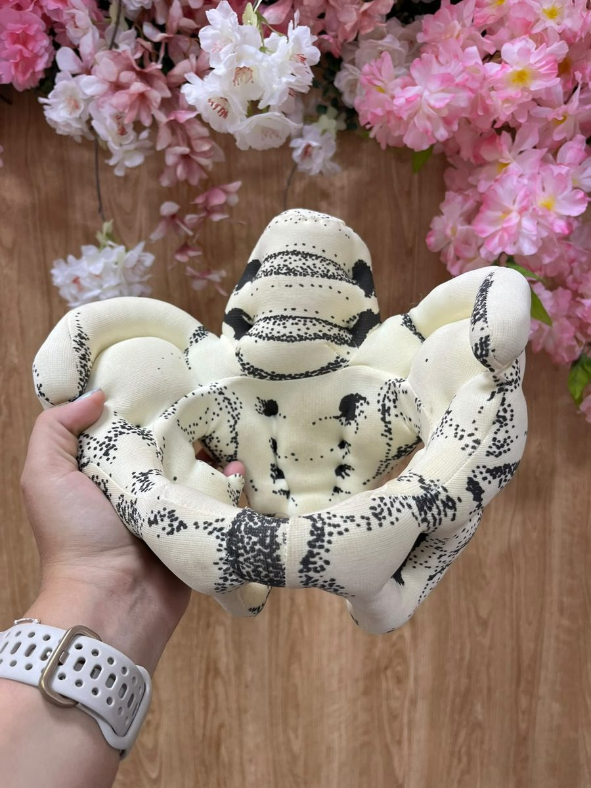

Gestação
Cuido do seu corpo durante a gravidez e te preparo para o parto, seja ele qual for.
- Escape de xixi ao tossir ou espirrar
- Dor nas costas, na pelve ou no quadril
- Preparo do assoalho pélvico para o parto
- Respiração, posições e relaxamento
Atendimento domiciliar · Zona Oeste e Zona Sul de SP
Da gestação ao pós-parto, com avaliação sem pressa e acompanhamento de perto, sem você precisar se deslocar.

Como eu ajudo
Comum não quer dizer normal. Escape de xixi, dor e insegurança com o parto têm cuidado, e você não precisa esperar passar sozinha.
Cuido do seu corpo durante a gravidez e te preparo para o parto, seja ele qual for.
Fico de sobreaviso a partir da data provável do parto, te acompanho pelo WhatsApp no início do trabalho de parto e te encontro na maternidade.
Seu corpo passou por nove meses de mudança. Ele merece cuidado na recuperação, assim como o bebê.
Como funciona
Simples, sem burocracia e sem você sair de casa.
Pelo WhatsApp, contando rapidinho o seu momento.
Uma ligação de uns 10 minutos para eu entender o que você precisa.
De 1h a 1h30: conversa sem pressa e exame, com cada etapa explicada antes e só com a sua autorização.
Um acompanhamento feito para a sua fase, que pode seguir da gestação ao pós-parto.

Por que comigo
Sem encaixar deslocamento no horário de trabalho, sem procurar babá, sem sair de casa cansada ou enjoada. Eu levo o material, e fica mais fácil manter o tratamento.
De 1h a 1h30 para conhecer sua história, examinar e explicar o que encontrei.
Eu sigo com você depois que o bebê nasce, com mensagens e retornos ao longo dos primeiros meses.
Cada orientação tem fundamento, explicada em palavras simples.
Quem sou
Na graduação, vi de perto que o cuidado com a gestante, principalmente no parto, nem sempre é respeitoso. Me imaginei do outro lado e decidi fazer diferente: acompanhar outras mulheres com escuta, informação e respeito.
Sou formada pela UNISA e especialista em Saúde Pélvica e Obstetrícia pelo Hospital das Clínicas da FMUSP. Atendo gestantes e puérperas desde 2024 e já acompanhei mais de 500 gestantes.
Vou até a sua casa porque sei que, na gestação e com um bebê recém-nascido, sair de casa é uma logística enorme. E, como alguém que também sonha em ser mãe, cuido de você como eu gostaria de ser cuidada.
Raissa Andrade
No dia a dia



Quem já foi acompanhada
Nota 5,0 no Google (13 avaliações) e no Doctoralia (12 avaliações).
"Explicava tudo de forma simples e didática, o que foi ótimo pra mim que sou mãe de primeira viagem. Me acolheu com a escuta, principalmente no puerpério."Érica T., avaliação no Google
"Muito atenciosa, competente e cuidadosa. Me senti acolhida desde a primeira consulta."Marcella M., avaliação no Google
"Me acompanhou no final da gestação com fisio pélvica e foi um dos melhores investimentos."Joana F., avaliação no Google
Veja todas as avaliações no Google.
Onde atendo
Mora em outro bairro? Também atendo outras regiões, com taxa de deslocamento. Me chama que a gente vê.
Dúvidas
Costumo indicar começar a partir de 12 semanas. Quanto antes você conhece o seu assoalho pélvico, mais tempo tem para se preparar para o parto.
Eu vou até a sua casa. Começamos com uma conversa sobre a sua história e o que te incomoda. Depois, explico cada etapa do exame antes de fazer, e nada acontece sem a sua autorização. No final, você entende o que está acontecendo e sai com um plano para o seu momento.
Para a avaliação, o ideal é o seu quarto, para você poder deitar na cama com privacidade. Se o seu prédio tiver uma sala com maca e você preferir, podemos usar. Para as sessões, peço só uma bola suíça. O resto eu levo: luvas, gel, aparelhos, faixas, banqueta de parto e materiais educativos.
Na maioria das gestações, sim, e ela é recomendada. O importante é ter a liberação do seu obstetra e adaptar o tipo e a intensidade a cada fase. Na avaliação, eu te oriento sobre o que fazer e o que evitar no seu caso.
Não existe uma única posição ideal. Muitas mulheres se sentem melhor em posições em que conseguem se movimentar, como de cócoras, em quatro apoios ou de lado. Na preparação, a gente treina várias para você descobrir quais funcionam para o seu corpo.
Varia muito de mulher para mulher, e no primeiro filho costuma ser mais longo. A fase inicial (fase latente) pode durar muitas horas. Se você contratar o acompanhamento de parto, eu te acompanho por WhatsApp nessa fase e te encontro na maternidade.
Acompanho partos em maternidades como Star, Pro Matre, Einstein, Santa Joana, Santa Maria e Sepaco. A partir da data provável do parto, fico de sobreaviso para você.
Sim. Escape de xixi, dor na relação e sensação de peso não precisam ser aceitos como "coisa de mãe", mesmo que o parto tenha sido há algum tempo. Uma avaliação mostra como está o seu corpo hoje.
O atendimento é particular. Emito recibo para você pedir reembolso ao seu plano, se ele oferecer. Aceito Pix e cartão de crédito.
Sim. Também ofereço drenagem linfática, massagem e pilates para mulheres, por exemplo no pós-operatório.
Me chama no WhatsApp. Eu te ligo, entendo o que você precisa e te explico como funciona a avaliação.
Conversar no WhatsApp